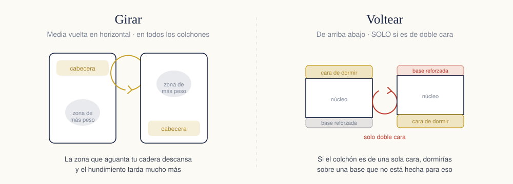

Buena parte de los colchones que «se estropean» no se estropean: se descuidan. Se dejan siempre en la misma posición, se cubren con una sábana y nada más, se apoyan sobre una base que no ventila y, cuando cae algo encima, se frotan con el primer producto que hay en casa. Un colchón que debería aguantar diez años se queda en seis.
Lo bueno es que la rutina que lo evita ocupa quince minutos cada tres meses. Aquí está entera, y también qué hacer con cada tipo de mancha, que es donde más se estropean los colchones en un solo día.
Girarlo: quince minutos cada tres meses
Hay dos movimientos distintos que mucha gente confunde:
- Girar es darle media vuelta en horizontal, para que la cabecera pase a los pies. Esto se hace en todos los colchones.
- Voltear es darle la vuelta de arriba abajo, para dormir sobre la otra cara. Esto solo se hace si el colchón es de doble cara.
Girarlo importa porque tu cuerpo no reparte el peso: las caderas y los hombros caen siempre en el mismo punto, noche tras noche. Cambiar la orientación cada tres o cuatro meses hace que esa zona descanse y retrasa mucho el hundimiento.
Lo de voltear es más delicado. Un colchón de una sola cara tiene el acolchado de confort arriba y una base reforzada abajo; si duermes sobre esa base, no solo estarás incómodo, es que estás usando una superficie que no está pensada para eso. Si tu colchón lleva cuatro asas verticales en la platabanda, girarlo entre dos personas es cuestión de un minuto.

Un truco para no olvidarte
- Asócialo al cambio de estación: enero, abril, julio y octubre.
- Aprovecha ese día para aspirarlo y airearlo, y lo tienes todo hecho de una vez.
- Si tu colchón es de doble cara, alterna: una vez girar, la siguiente voltear.
La limpieza a fondo, paso a paso
Cuatro veces al año, coincidiendo con el giro:
- Quita todo: sábanas, protector, funda. A lavar.
- Aspira con la boquilla de tapicerías, despacio y sin saltarte los laterales ni las costuras, que es donde se acumula el polvo y la piel muerta.
- Bicarbonato para el olor: espolvorea una capa fina por toda la superficie y déjalo una o dos horas. Si el colchón huele a cerrado, déjalo más.
- Vuelve a aspirar hasta que no quede polvo blanco.
- Airéalo: ventana abierta un par de horas. Si te da el sol directo un rato, mejor, pero sin dejarlo horas al sol porque los tejidos se degradan.
- Deja secar del todo antes de volver a vestir la cama. Un colchón que se tapa con humedad es un colchón con moho a medio plazo.
Y la regla que más colchones salva: no lo empapes nunca. El agua atraviesa la funda y llega a la espuma, donde tarda días en secarse por dentro. Ahí es donde aparecen el moho y los olores que ya no se van.
Qué hacer con cada mancha
Lo primero, siempre: actúa rápido y da toques, no frotes. Frotar extiende la mancha y la empuja hacia dentro.
| Mancha | Cómo se quita | Ojo con esto |
|---|---|---|
| Sangre | Agua fría a toques con un paño limpio; si resiste, un poco de agua oxigenada | Nunca agua caliente: coagula la sangre y fija la mancha para siempre |
| Orina | Absorbe todo lo que puedas, luego vinagre blanco rebajado en agua y después bicarbonato para el olor | No uses lejía: amarillea el tejido y deja olor peor que el original |
| Sudor | Agua con unas gotas de vinagre blanco, y bicarbonato encima al secar | Si ya ha amarilleado, se atenúa pero rara vez se va del todo |
| Vino y café | Absorbe primero con papel, luego agua fría con un poco de jabón neutro | Cuanto más tardes, menos posibilidades: en caliente se fija |
| Vómito | Retira en seco, luego bicarbonato para absorber, aspira y termina con vinagre rebajado | Ventila muy bien: el olor se queda si el colchón no seca del todo |
Después de cualquiera de estas, seca la zona con un paño seco haciendo presión y déjala al aire hasta que no quede humedad. Un secador de pelo a temperatura baja y a distancia ayuda; a temperatura alta y pegado, estropea la espuma.
 Fabricado para durar
Colchones Nuvora
Cuidado como cuenta este artículo, un colchón nuestro te dura lo que promete. Cinco años de garantía contra defectos y hundimientos.
Desde205,34 €
Comparar los tres modelos →
Envío gratis30 noches de prueba5 años de garantía24 medidas
Fabricado para durar
Colchones Nuvora
Cuidado como cuenta este artículo, un colchón nuestro te dura lo que promete. Cinco años de garantía contra defectos y hundimientos.
Desde205,34 €
Comparar los tres modelos →
Envío gratis30 noches de prueba5 años de garantía24 medidas
Ácaros: lo que funciona y lo que no
Los ácaros del polvo viven de la piel muerta y necesitan humedad para sobrevivir. De ahí sale todo lo que sirve y todo lo que no:
- Funciona: una funda protectora antiácaros, que es una barrera física; ventilar el dormitorio cada mañana; lavar sábanas y fundas a 60 °C; y mantener la habitación por debajo del 50 % de humedad.
- No funciona tanto: los sprays antiácaros, cuyo efecto dura muy poco; el bicarbonato, que va bien para los olores pero no mata nada; y hacer la cama nada más levantarte, que atrapa la humedad de la noche justo donde ellos la quieren.
Si tienes alergia, el paso que más se nota es el primero: la funda con cierre perimetral completo. Cuesta poco y hace más que todo lo demás junto.
La base también cuida el colchón
Un colchón necesita ventilar por abajo. Cada noche pierdes medio litro largo de agua en forma de sudor, y esa humedad tiene que salir por algún sitio. Si el colchón se apoya sobre una superficie cerrada, se queda ahí.
Por eso el peor sitio para un colchón es directamente en el suelo: no ventila, coge el frío y la humedad del suelo, y en pocos meses aparecen manchas oscuras en la cara de abajo. Si por lo que sea duermes así, levanta el colchón contra la pared un rato varias veces por semana.
Con una base en condiciones esto no pasa. Nuestros canapés llevan la tapa tapizada en tejido 3D transpirable justamente por eso: deja pasar el aire aunque por debajo haya un cajón cerrado.
 Fabricado por nosotros
Canapé abatible Nuvora
Tapa 3D transpirable, estructura con travesaños de acero y 26 cm de profundidad de almacenaje. En las mismas medidas que tu colchón.
Desde300 €
Ver los canapés →
Fabricado por nosotros
Canapé abatible Nuvora
Tapa 3D transpirable, estructura con travesaños de acero y 26 cm de profundidad de almacenaje. En las mismas medidas que tu colchón.
Desde300 €
Ver los canapés →
El protector: lo más barato que puedes hacer
Un protector de colchón cuesta una fracción de lo que cuesta el colchón y es lo único que se interpone entre él y todo lo que puede caerle encima. Al elegirlo:
- Que sea transpirable. Los protectores de plástico impermeable protegen mucho y ventilan cero: acabas durmiendo caliente y con humedad atrapada.
- Que sea lavable a 60 °C, que es la temperatura a la que se van los ácaros.
- Que ajuste de verdad, con falda o con goma perimetral, para que no se arrugue debajo de ti cada noche.
Cinco cosas que le quitan años a un colchón
- Sentarse siempre en el mismo borde para vestirse. El perímetro es la zona que antes cede. Cambia de lado.
- Dejarlo en el suelo. Sin ventilación por abajo, la humedad no tiene salida.
- Doblarlo o enrollarlo para mudarlo. Solo se puede enrollar de fábrica, con la maquinaria adecuada; hacerlo en casa rompe el núcleo por dentro.
- Usar limpiadores agresivos: lejía, amoniaco o quitamanchas de moqueta. Amarillean el tejido y degradan la espuma.
- Hacer la cama recién levantado. Deja las sábanas abiertas media hora: es gratis y es lo que mejor combate la humedad.
La rutina, en una línea
Protector siempre puesto, ventana abierta cada mañana, y cada tres meses: girar, aspirar, bicarbonato y airear. Nada más. Es la diferencia entre cambiar de colchón a los seis años o a los diez.
Y cuando ni cuidándolo aguante, las señales para saber que ya toca están en la guía de cada cuánto se cambia el colchón.
Preguntas frecuentes
¿Cada cuánto hay que girar el colchón?
Cada tres o cuatro meses, girándolo 180 grados para que la cabecera pase a los pies. Eso reparte el desgaste, porque las caderas y los hombros siempre caen en el mismo sitio. Voltearlo de arriba abajo solo tiene sentido si el colchón es de doble cara; si no lo es, la cara de abajo no está preparada para dormir sobre ella.
¿Se puede lavar un colchón con agua?
El tejido de arriba se puede humedecer un poco, pero nunca hay que empapar el colchón. El agua atraviesa la funda y llega a la espuma, que tarda días en secarse por dentro y puede acabar con moho o con la estructura del material dañada. Se limpia por zonas, con poca humedad y secando bien.
¿Cómo se quita una mancha de sangre del colchón?
Con agua fría, nunca caliente. El calor coagula las proteínas de la sangre y fija la mancha para siempre. Aplica agua fría con un paño limpio, dando toques, y si hace falta añade un poco de agua oxigenada de la de farmacia. Nunca frotes: frotar extiende la mancha y la mete más adentro.
¿El bicarbonato sirve de verdad para el colchón?
Sirve para los olores, que es su función real. Se espolvorea sobre el colchón, se deja actuar una hora o dos y se aspira a fondo. Lo que no hace es desinfectar ni matar ácaros, por mucho que se repita en internet.
¿Cómo se evitan los ácaros del colchón?
Lo que funciona es una funda protectora antiácaros, ventilar el dormitorio cada mañana y lavar la ropa de cama a 60 °C. Los ácaros necesitan humedad, así que bajar la humedad de la habitación es más eficaz que cualquier espray. Los sprays antiácaros tienen un efecto muy corto.
¿Cuánto tarda en expandirse un colchón enrollado al vacío?
Recupera casi toda su forma en las primeras horas y termina de asentarse en unas 24. Déjalo en una habitación ventilada y no duermas sobre él hasta que haya recuperado su grosor. El olor a material nuevo de los primeros días es normal y se va ventilando.
Cuídalo bien y te durará lo que promete
Nuestros colchones llevan 5 años de garantía contra defectos y hundimientos. Cuidarlos como cuenta este artículo hace el resto.
Ver colchones